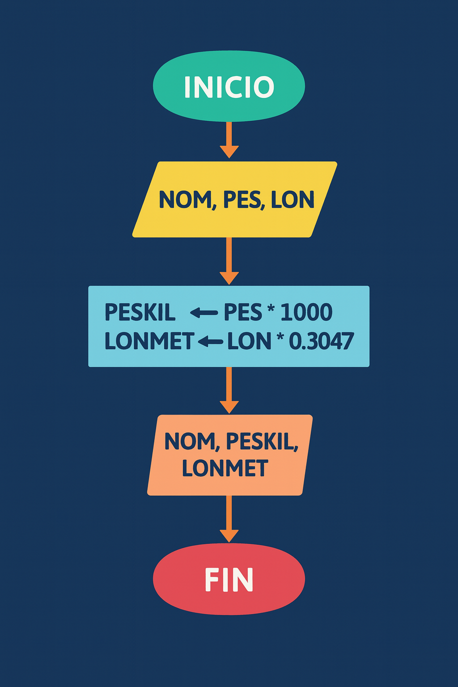

Descripción
Dado el nombre, peso (en libras) y longitud (en pies) de un dinosaurio, el programa muestra el peso en kilogramos y la longitud en metros.
Datos:
- NOM: Nombre del dinosaurio.
- PES: Peso en libras.
- LON: Longitud en pies.
Consideraciones:
- 1 libra = 0.453592 kg
- 1 pie = 0.3047 m
Diagrama de flujo
